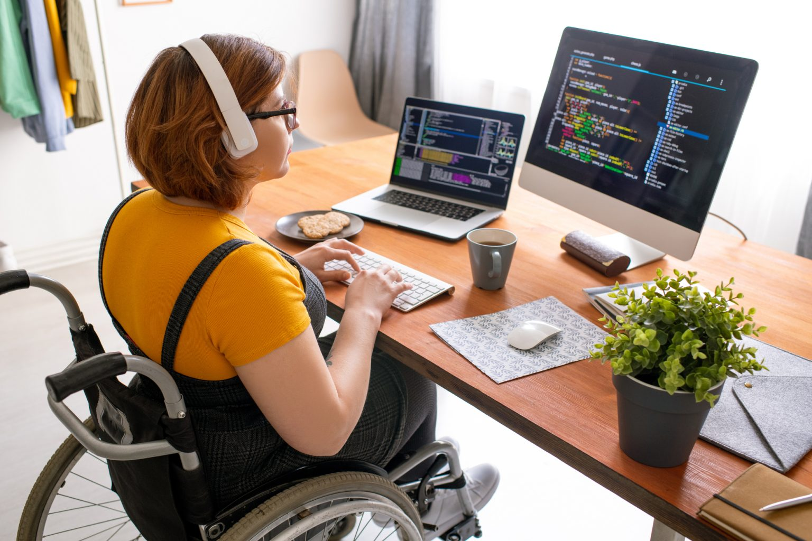

O objetivo da inclusão digital é abrir as portas da tecnologia para o maior número de pessoas o possível e proporcionar a todos o acesso à informação e conhecimento sobre o mundo digital.
Uma parte importante disso é garantir que aplicativos e sites sejam desenvolvidos de forma acessível, para que pessoas com deficiências visuais, auditivas ou de movimento possam utilizá-los sem eventuais problemas. Além disso, programas de mentorias desempenham um papel fundamental. Eles oferecem uma enorme oportunidade para aqueles com habilidades tecnológicas orientarem de forma adequada aqueles que estão dando os primeiros passos no mundo digital que vive em constante evolução.
A inclusão digital é o processo que visa garantir que todos, independentemente da localização, estatuto socioeconómico, idade ou nível de competências, tenham acesso às tecnologias digitais, saibam como utilizá-las de forma eficaz e sejam capazes de tirar partido das oportunidades que oferecem. Isso envolve:
- Acesso físico: Disponibilidade de dispositivos como computadores, smartphones e tablets, além de conectividade com a internet.
- Alfabetização digital: As habilidades necessárias para usar a tecnologia, desde a operação básica de dispositivos até a navegação na Internet e o uso de software específico.
- Conteúdo relacionado: Disponibilidade de informações e serviços online úteis e relevantes para os usuários.
- Participação: Incentivar e apoiar todos a participarem ativamente em ambientes digitais, incluindo sociais, educacionais, de emprego e governamentais.
Existem vários locais e iniciativas onde a inclusão digital é gratuita, proporcionando acesso a dispositivos como celulares, computadores e internet, alguns exemplos são:
- Bibliotecas Públicas: Muitas bibliotecas públicas oferecem acesso gratuito a computadores e à Internet. Eles também podem oferecer programas de alfabetização digital e workshops sobre o uso da tecnologia.
- Centro Comunitário: Os centros comunitários costumam ter laboratórios de informática equipados com computadores e acesso à Internet. Eles também podem fornecer treinamento e suporte técnico.
- Telecentros e Centros de Inclusão Digital: Os telecentros são espaços dedicados à inclusão digital, muitas vezes localizados em áreas urbanas e rurais de baixa renda. Eles oferecem cursos gratuitos de informática e internet e treinamento digital.
